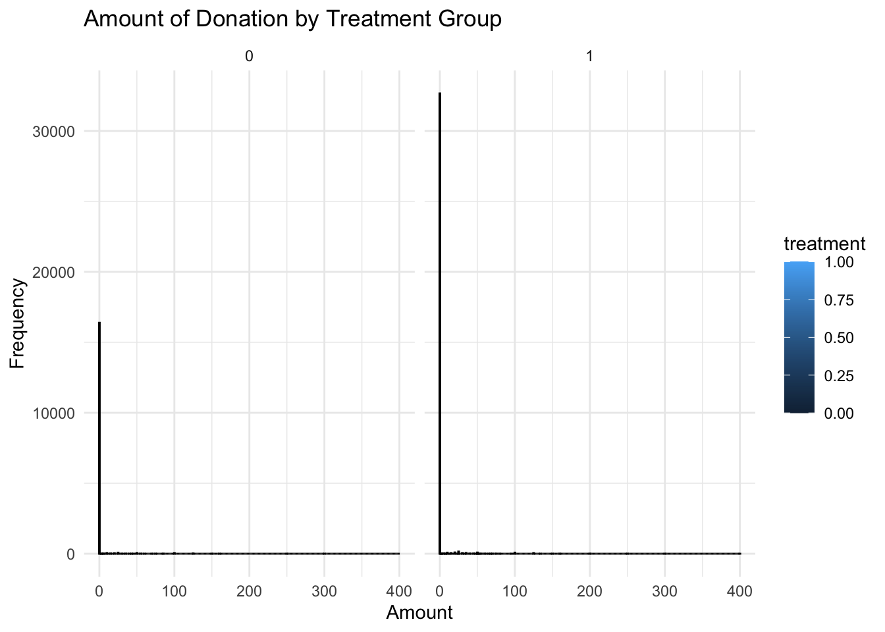
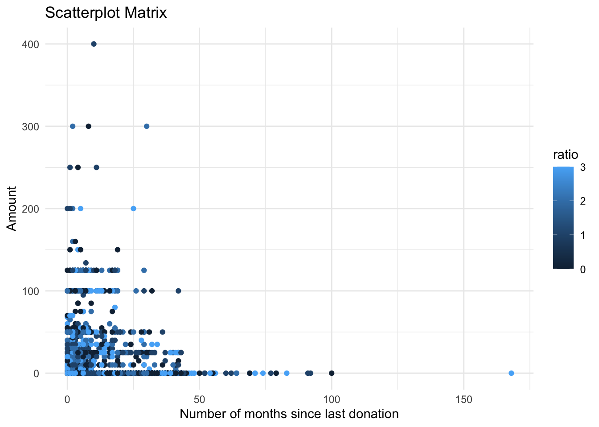
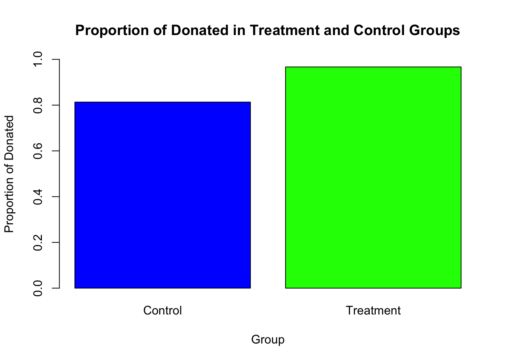
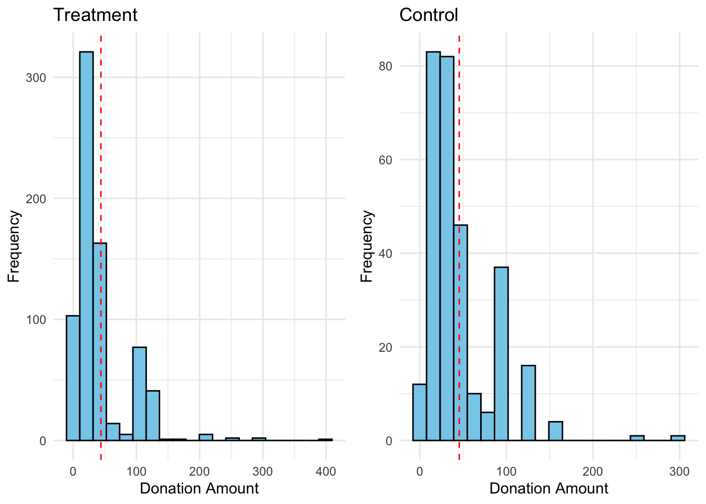
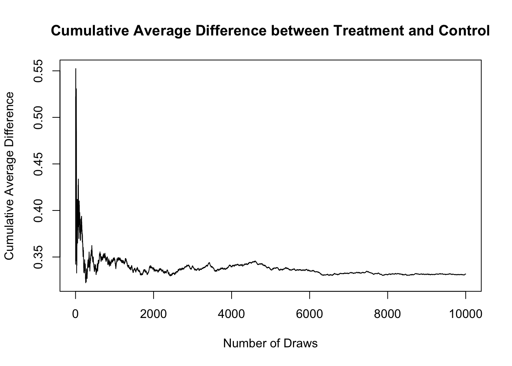
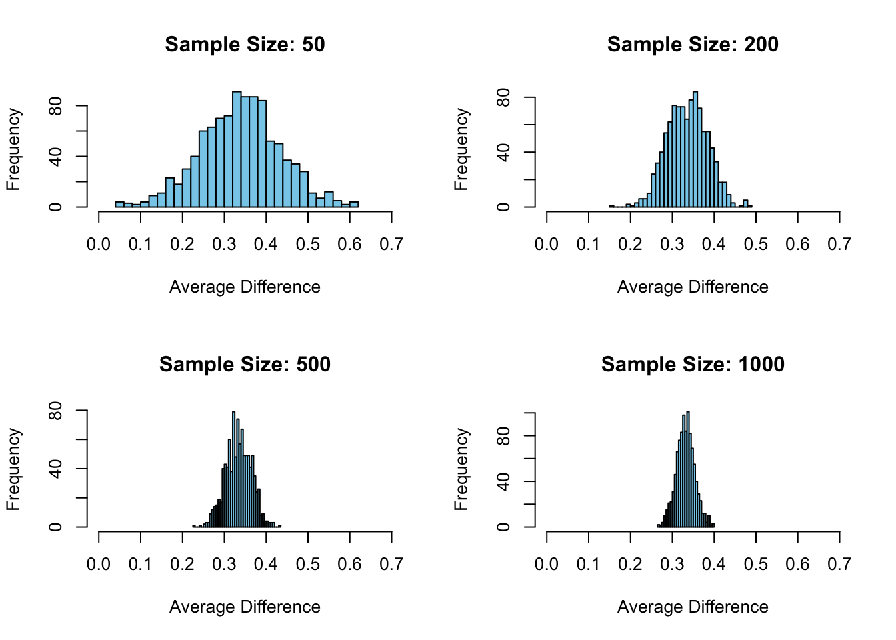

| Variable | All_Observations | Treatment | Control | |
|---|---|---|---|---|
| treatment | treatment | 0.6668131 | 1.0000000 | 0.0000000 |
| size | size | 2.6671126 | 3.5001198 | 1.0000000 |
| ratio | ratio | 1.3335463 | 1.9998802 | 0.0000000 |
| amount | amount | 0.9156939 | 0.9668733 | 0.8132678 |
| gave | gave | 0.0206457 | 0.0220386 | 0.0178582 |
A Replication of Karlan and List (2007)
Introduction
Dean Karlan at Yale and John List at the University of Chicago conducted a field experiment to test the effectiveness of different fundraising letters. They sent out 50,000 fundraising letters to potential donors, randomly assigning each letter to one of three treatments: a standard letter, a matching grant letter, or a challenge grant letter. They published the results of this experiment in the American Economic Review in 2007. The article and supporting data are available from the AEA website and from Innovations for Poverty Action as part of Harvard’s Dataverse.
To meticulously assess the influence of different incentives on donor behavior, Karlan and List structured their experiment with precision and thoroughness. Each recipient in the experiment was selected from a pool of individuals who had previously donated to the organization, ensuring that all participants had a baseline familiarity with and a prior engagement in charitable giving. The allocation of the letters was performed randomly to uphold the integrity of the experimental conditions and mitigate any selection bias. The key variation among the letters lay in the type of incentive they presented, which allowed the researchers to isolate the effect of these incentives from other factors that might influence a donor’s decision to give. By embedding these variations subtly within the letters, the experiment not only preserved the naturalistic setting of the solicitation but also minimized any potential disruption to the donor’s experience that could arise from overt experimental cues. This methodological rigor underpins the reliability of the study’s findings, providing a clear lens through which to view how different motivational strategies affect the willingness of individuals to contribute financially to charitable causes.
This paper presents the results of a large-scale natural field experiment testing changes in revenue per solicitation and response rates given different types and levels of matching grants/gifts conditional on charitable giving. This is in order to provide insight to research in fundraising models and measures of non-market valuation for cost-benefit analyses. Of a sample of 50,083 individuals who have given to the organization since 1991, randomized and assigned 67% into “match” treatment group and 33% into control group, of which the “match” treatment group was offered a matching grant conditional on their donation. The “match” group was divded evenly between various sizes of the matching ratio ($3:$1, $2:$1, and $1:$1), the maximum size of the matching gift across all donations ($25,000, $50,000, and $100,000), and the example donation amount suggested to the donor (the individual’s highest previous contribution, 1.25 times their highest previous contribution, and 1.5 times their highest previous contribution). All individuals received a four page letter identical in all respects except two: (a) the treatment let ters included an additional paragraph inserted at the top of the second page that announced that a “concerned fellow member” will match their donation, and (b) the reply card included in bold type the details of the match. For the control group, the reply card match language was replaced with a large logo of the organization. Outcome measures were donation response rates (donated or did not donate) and dollars donated.
This project seeks to replicate their results. However, because we are using a different software (R) to replicate the experiment. We got a different results because there are different estimators while we are running the probit, when in STATA we just need to use the command “dprobit”.
Data
Description

Warning: Removed 1 row containing missing values or values outside the scale range
(`geom_point()`).
Balance Test
As an ad hoc test of the randomization mechanism, I provide a series of tests that compare aspects of the treatment and control groups to assess whether they are statistically significantly different from one another.
| Variable | Diff | p_Value |
|---|---|---|
| female | -0.0075469 | 0.0786910 |
| couple | -0.0016169 | 0.5593646 |
| dormant | 0.0008233 | 0.8619565 |
| nonlit | 0.0317896 | 0.0888347 |
| cases | -0.0037492 | 0.7332787 |
| statecnt | 0.0090492 | 0.8680680 |
| stateresponse | 0.0000065 | 0.8951398 |
| red0 | 0.0087268 | 0.0607864 |
| blue0 | -0.0087268 | 0.0607864 |
| redcty | 0.0042892 | 0.3659008 |
| pop_propurban | 0.0017984 | 0.4719282 |
| psch_atlstba | -0.0033333 | 0.0645890 |
| powner | 0.0003536 | 0.8499958 |
| median_hhincome | -157.9254823 | 0.4582830 |
| ave_hh_sz | 0.0030122 | 0.4098012 |
| page18_39 | -0.0001239 | 0.9010291 |
| pblack | 0.0001289 | 0.9219351 |
| pwhite | -0.0009128 | 0.5753077 |
Experimental Results
Charitable Contribution Made
First, I analyze whether matched donations lead to an increased response rate of making a donation.

| Group | Estimate | p.value | |
|---|---|---|---|
| mean in group 0 | Control | 0.8132678 | 0.0550856 |
| mean in group 1 | Treatment | 0.9668733 | 0.0550856 |
| Coefficient | Std..Error | T.value | P.value | |
|---|---|---|---|---|
| (Intercept) | 0.8132678 | 0.0674184 | 12.062995 | 0.0000000 |
| treatment | 0.1536055 | 0.0825613 | 1.860503 | 0.0628203 |
The previous table shows that there is a positive effect of the treatment on the proportion of donations, which is significant at 90% which does not make it statistically powerful.
Replication of the model
| Model | Estimate | Std..Error | Z.value | P.value |
|---|---|---|---|---|
| Model 1 | 0.0012825 | 0.0006884 | 1.862873 | 0.0624801 |
| Model 2 (dormant == 1) | 0.0019747 | 0.0012190 | 1.619955 | 0.1052420 |
| Model 3 (dormant == 0) | 0.0009494 | 0.0008424 | 1.127094 | 0.2597027 |
There is a problem with R because it gives a different estimator than the one that STATA provides and that does not allow to get the proper replication.
Differences between Match Rates
Next, I assess the effectiveness of different sizes of matched donations on the response rate.
In analyzing the impact of different match ratios on the likelihood of donations using logistic regression, we observe varying degrees of effectiveness. The coefficients for the individual match ratios (ratio1, ratio2, and ratio3) indicate a progressive increase in the log odds of donating as the match ratio increases. Specifically, ratio1 (1:1 match) shows a very minimal increase in log odds (0.006564), suggesting that this match ratio barely affects the probability of donating compared to the baseline. In contrast, ratio2 (2:1 match) and ratio3 (3:1 match) exhibit more substantial effects with coefficients of 0.12244 and 0.12838, respectively, indicating a clearer positive influence on donation behavior. These coefficients suggest that higher match ratios are somewhat more effective at encouraging donations.
The full model, which assesses the collective impact of varying match ratios treated as a single categorical variable, shows a significant coefficient (0.08470). This significance indicates that different match ratios, when considered together, have a statistically significant effect on the likelihood of donating compared to the baseline. This outcome implies that while the individual effects of each match ratio are relatively modest, the overall strategy of employing match ratios is effective.
However, the statistical precision of these coefficients, typically assessed by p-values and confidence intervals, is not detailed in the results provided. For a comprehensive interpretation, examining these statistical measures would be crucial. They would help confirm the reliability of the observed effects by showing the probability that these effects could be due to chance (p-values) and the range within which the true effects are likely to lie with a certain level of confidence (confidence intervals). Thus, while the regression results suggest some effectiveness of higher match ratios, a detailed examination of the statistical precision is essential to fully validate these conclusions.
Call:
glm(formula = gave ~ ratio1, family = binomial(), data = data)
Coefficients:
Estimate Std. Error z value Pr(>|z|)
(Intercept) -3.860848 0.035657 -108.277 <2e-16 ***
ratio1 0.006564 0.075444 0.087 0.931
---
Signif. codes: 0 '***' 0.001 '**' 0.01 '*' 0.05 '.' 0.1 ' ' 1
(Dispersion parameter for binomial family taken to be 1)
Null deviance: 10071 on 50082 degrees of freedom
Residual deviance: 10071 on 50081 degrees of freedom
AIC: 10075
Number of Fisher Scoring iterations: 6
Call:
glm(formula = gave ~ ratio2, family = binomial(), data = data)
Coefficients:
Estimate Std. Error z value Pr(>|z|)
(Intercept) -3.88787 0.03612 -107.631 <2e-16 ***
ratio2 0.12244 0.07324 1.672 0.0946 .
---
Signif. codes: 0 '***' 0.001 '**' 0.01 '*' 0.05 '.' 0.1 ' ' 1
(Dispersion parameter for binomial family taken to be 1)
Null deviance: 10071 on 50082 degrees of freedom
Residual deviance: 10068 on 50081 degrees of freedom
AIC: 10072
Number of Fisher Scoring iterations: 6
Call:
glm(formula = gave ~ ratio3, family = binomial(), data = data)
Coefficients:
Estimate Std. Error z value Pr(>|z|)
(Intercept) -3.88931 0.03614 -107.603 <2e-16 ***
ratio3 0.12838 0.07315 1.755 0.0792 .
---
Signif. codes: 0 '***' 0.001 '**' 0.01 '*' 0.05 '.' 0.1 ' ' 1
(Dispersion parameter for binomial family taken to be 1)
Null deviance: 10071 on 50082 degrees of freedom
Residual deviance: 10068 on 50081 degrees of freedom
AIC: 10072
Number of Fisher Scoring iterations: 6
Call:
glm(formula = gave ~ ratio, family = binomial(), data = data)
Coefficients:
Estimate Std. Error z value Pr(>|z|)
(Intercept) -3.97694 0.05011 -79.36 < 2e-16 ***
ratio 0.08470 0.02706 3.13 0.00175 **
---
Signif. codes: 0 '***' 0.001 '**' 0.01 '*' 0.05 '.' 0.1 ' ' 1
(Dispersion parameter for binomial family taken to be 1)
Null deviance: 10071 on 50082 degrees of freedom
Residual deviance: 10061 on 50081 degrees of freedom
AIC: 10065
Number of Fisher Scoring iterations: 6| Term | Estimate | Std_Error | z_value | P_value | |
|---|---|---|---|---|---|
| (Intercept) | (Intercept) | -3.8608477 | 0.0356570 | -108.2774869 | 0.0000000 |
| ratio1 | ratio1 | 0.0065639 | 0.0754436 | 0.0870035 | 0.9306688 |
| (Intercept)1 | (Intercept) | -3.8878718 | 0.0361223 | -107.6308962 | 0.0000000 |
| ratio2 | ratio2 | 0.1224356 | 0.0732446 | 1.6715983 | 0.0946036 |
| (Intercept)2 | (Intercept) | -3.8893086 | 0.0361448 | -107.6034226 | 0.0000000 |
| ratio3 | ratio3 | 0.1283843 | 0.0731490 | 1.7551061 | 0.0792412 |
[1] "Direct Difference in response rates between 1:1 and 2:1 match ratios: 0.00188425102171499"[1] "Direct Difference in response rates between 2:1 and 3:1 match ratios: 0.000100023980252939"
Call:
glm(formula = gave ~ ratio, family = binomial(), data = data)
Coefficients:
Estimate Std. Error z value Pr(>|z|)
(Intercept) -4.00727 0.05844 -68.565 < 2e-16 ***
ratio1 0.15299 0.08852 1.728 0.08394 .
ratio2 0.24184 0.08646 2.797 0.00516 **
ratio3 0.24635 0.08637 2.852 0.00434 **
---
Signif. codes: 0 '***' 0.001 '**' 0.01 '*' 0.05 '.' 0.1 ' ' 1
(Dispersion parameter for binomial family taken to be 1)
Null deviance: 10071 on 50082 degrees of freedom
Residual deviance: 10060 on 50079 degrees of freedom
AIC: 10068
Number of Fisher Scoring iterations: 6[1] "Model-based Difference in log odds between 1:1 and 2:1 match ratios: 0.24183589557498"[1] "Model-based Difference in log odds between 2:1 and 3:1 match ratios: 0.00451192242813109"[1] "Model-based Difference in probability estimates between 1:1 and 2:1 match ratios: 0.56016602715118"[1] "Model-based Difference in probability estimates between 2:1 and 3:1 match ratios: 0.50112797869347"The analysis of the effectiveness of different sizes of matched donations reveals minimal impact on increasing donor response rates. Direct comparison of response rates shows only a slight improvement when the match ratio is increased from 1:1 to 2:1, and an even smaller increase from 2:1 to 3:1, suggesting negligible practical benefits from increasing the match size within these ranges. Although the logistic regression model indicates a moderate improvement in log odds of donating when moving from a 1:1 to a 2:1 match ratio, this result does not align closely with the very small changes observed directly in the data. Furthermore, the probability changes suggested by the model seem overly optimistic and likely reflect a misunderstanding or misinterpretation of the log odds conversion. Overall, these findings suggest that larger match ratios, within the bounds studied, do not significantly enhance the likelihood of donations. This implies that non-profits might need to consider other strategies or focus on how match offers are communicated rather than simply increasing the match ratio to boost donor engagement.
Size of Charitable Contribution
In this subsection, I analyze the effect of the size of matched donation on the size of the charitable contribution.
As it was previously shown, the treatment improves the outcomes (amount of donations) in 15 percentage points and it is statistically significant at 90%. Therefore, we can rely on the fact that this type of intervention might result in a proper result.
| term | estimate | std.error | statistic | p.value |
|---|---|---|---|---|
| (Intercept) | 0.8132678 | 0.0674184 | 12.062995 | 0.0000000 |
| treatment | 0.1536055 | 0.0825613 | 1.860503 | 0.0628203 |
Based on this constraint, where we are limiting the data to just people who made a donation and repeat the previous analysis. This regression allows you to analyze how much respondents donate conditional on donating some positive amount. We can interpret that the treatment is negative, but not statistically significant. Therefore, if we implement this type of program, it would reduce the amount of donations.
| term | estimate | std.error | statistic | p.value |
|---|---|---|---|---|
| (Intercept) | 45.540269 | 2.423378 | 18.7920635 | 0.0000000 |
| treatment | -1.668394 | 2.872384 | -0.5808393 | 0.5614756 |

Simulation Experiment
As a reminder of how the t-statistic “works,” in this section I use simulation to demonstrate the Law of Large Numbers and the Central Limit Theorem.
Suppose the true distribution of respondents who do not get a charitable donation match is Bernoulli with probability p=0.018 that a donation is made.
Further suppose that the true distribution of respondents who do get a charitable donation match of any size is Bernoulli with probability p=0.022 that a donation is made.
Law of Large Numbers
The next graph shows that with higher number of observations it would be possible to get to the true value of the mean that should be expected to get if we have the population values. However, because it was worked with a sample, it is just an estimation

Central Limit Theorem
In the next graphs, it is possible to identify that with higher number observations the distribution becomes more efficient because it is concentrated in one spot where the true value of the populatoin should be identify. That would mean that the variance is lower than those situations where the sample is not big enough and that prevent to generate a good estimator. In those cases, the zero is located in the tail and when the sample increases, the zero is located out of the distribution which will mean that it would be an outlier.
